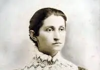

Марко́ Вовчо́к (при народженні — Марія Олександрівна Вілінська, у першому шлюбі — Маркович, в другому —
Лобач-Жученко; 10 (22) грудня 1833, маєток Єкатерининське Єлецького повіту Орловської губернії, тепер Липецька
область РФ — 28 липня (10 серпня) 1907, Нальчик, Росія) — українська письменниця, перекладачка, видавниця
російського походження. Її твори мали антикріпацьке спрямування та описували історичне минуле України.
В 1860-х здобула значної літературної слави в Україні після публікації в 1857 році українськомовної збірки
«Народні оповідання». Збагатила українську літературу низкою нових жанрів, зокрема соціально-феміністичною
повістю («Інститутка»). Повість «Маруся» в перекладі-адаптації французькою стала популярною в Західній Європі
кінця XIX ст. Після скандалу щодо плагіату її перекладів російською в 1870-х майже припинила літературну
кар'єру.
ПИСЬМЕННИКИ УКРАЇНИ
Конституцією загальнонаціональними символами України визначені прапор, герб і гімн. Проте важко не
погодитися, що код нації формують набагато більше складових: наша історія, традиції, поезія та музика,
архітектурні та художні пам’ятки, визначні місця та постаті, якими ми особливо пишаємося та завдяки яким
гордо заявляємо про себе на міжнародній арені. Зокрема розповідаємо про українських письменників
та письменниць .
- Тарас Шевченко
- Леся Українка
- Іван Франко
- Марко Вовчок
- Ольга Кобилянська
- Григорій Сковорода
- Іван Нечуй - Левицький
- Володимир Винниченко
- Іван Котляревський
Тарас Шевченко
Тара́с Григо́рович Шевче́нко (25 лютого (9 березня) 1814, с. Моринці, Київська губернія, Російська імперія
(нині Звенигородський район, Черкаська область, Україна) — 26 лютого (10 березня) 1861, Санкт-Петербург, Російська
імперія) — український поет, прозаїк, мислитель, живописець, гравер, етнограф, громадський діяч. Національний герой
і символ України. Діяч українського національного руху, член Кирило-Мефодіївського братства. Академік Імператорської академії мистецтв (1860).Літературна спадщина Шевченка, центральне місце в якій займає поезія, зокрема збірка «Кобзар», уважається основою сучасної української літератури і значною мірою української літературної мови.
За родинними переказами, Тарасові діди й прадіди з батьківського боку походили від козака Андрія, який
на початку XVIII століття прийшов із Запорізької Січі. Дід по матері Бойко Яким Іванович, був вихідцем з Прикарпаття, за однією з версій сином опришка Івана Бойчука.
Шевченко був і глибоким ліриком, і творцем епічних поем, і видатним драматургом та різнобічно
обдарованим митцем. Він вважається основоположником нової української літератури і родоначальником її революційно-
демократичного напряму. Саме його творчість дала ті начала, які стали провідними для передових українських
письменників другої половини XIX — початку XX століть.
Леся Українка
Ле́ся Украї́нка (справжнє ім'я — Лари́са Петрі́вна Ко́сач, у шлюбі Ко́сач-Кві́тка; 13 (25) лютого 1871,
Новоград-Волинський, Волинська губернія, Російська імперія[7] — 19 липня (1 серпня) 1913, Сурамі,
Тифліська губернія, Російська імперія (нині Грузія)) — українська письменниця, перекладачка та культурна
діячка, співзасновниця літературного гуртка «Плеяда» та групи Українська соціал-демократія. У сучасній
українській традиції входить до переліку найвідоміших жінок давньої та сучасної України.
Іван Франко
Іва́н Я́кович Франко́ (27 серпня 1856, Нагуєвичі, Дрогобицький повіт, Самбірський округ, Королівство Галичини
та Володимирії, Австрійська Імперія — 28 травня 1916, Львів, Долитавщина, Австро-Угорщина) — видатний
український поет, прозаїк, драматург, літературний критик, публіцист, перекладач, науковець, громадський і
політичний діяч. Доктор філософії (1893), доктор габілітований (1895), дійсний член Наукового товариства імені
Шевченка (1899), почесний доктор Харківського університету (1906)[8][9]. Член Всеукраїнського Товариства «Просвіта».
Марко Вовчок
Ольга Кобилянська

Ольга Юліа́нівна Кобиля́нська (27 листопада 1863, Гурагумора, Сучавський повіт, Герцогство Буковина,
Австро-Угорська імперія — 21 березня, 1942, Чернівці, Губернаторство Буковина, Румунське королівство)
— українська письменниця модерністка, рання буковинська феміністка, близька подруга та соратниця Лесі Українки.
Авторка повістей та оповідань про проблеми українського жіноцтва та буковинського села на межі століть,
щоденника та листів. Одна з найважливіших постатей раннього модернізму в українській літературі.
Маючи лише 4 класи офіційної освіти, Кобилянська гостро відчувала нерівноправне становище жінки, «рабство родинне і
рабство суспільне». У 1894 році стояла біля витоків «Товариства руських жінок на Буковині» («Дещо про ідею жіночого
руху»). У 1902 року в Чернівцях співорганізувала та очолила «Кружок українських дівчат».
Послідовниця феміністичних ідей Наталії Кобринської, близька подруга художниці Августи Кохановської, лікарки Софії
Окуневської, Ольги Устиянович, під впливом яких німецько- та румунськомовна Кобилянська почала писати українською,
самостійно обрала українську ідентичність та почала відстоювати права українського жіноцтва та селянства.
Григорій Сковорода
Григо́рій Са́вич Сковорода́ (22 листопада (3 грудня) 1722, Чорнухи, Лубенський полк, Гетьманщина, Російська імперія,
нині Полтавська область, Україна — 29 жовтня (9 листопада) 1794, Іванівка, Харківщина, Російська імперія)
— український філософ-містик, богослов, поет, педагог, можливо, і композитор літургійної музики.
Мав значний вплив на сучасників і подальші покоління своїми байками, піснями, філософськими творами, а також
способом життя, через що його називали «Сократом».
Навчався в Києво-Могилянській академії (вищої освіти не здобув). Філософські погляди Сковороди присвячені головним
чином етиці. Власної філософської системи не створив. Не був лояльним до церковної та світської ієрархії, відкидав
будь-який примус, не любив церковних ритуалів, віддаючи перевагу особистій духовній свободі. Від 1769 року вів життя самітника й мандрівного філософа; мандрував переважно по Слобожанщині. Тоді ж почав писати філософські діалоги й трактати, в яких біблійна проблематика переплітається з ідеями платонізму та стоїцизму. Головним сенсом людського існування вважав самопізнання.
Григорій Сковорода писав свої твори різновидами староукраїнської літературної мови: художні та філософські твори
слов'яноруською (слов'яноукраїнською), поезії та байки — книжною українською (у ній менше церковнослов'янських
елементів). Частину листування Сковорода вів також латинською мовою.
Іван Нечуй - Левицький
Народився 13 (25) листопада 1838 року в сім'ї сільського священника в Стеблеві, нині селище міського типу
Корсунь-Шевченківського району Черкаської області, Україна. Батько його, Семен Степанович, був освіченою людиною
прогресивних поглядів, мав велику домашню книгозбірню і на власні кошти влаштував школу для селян, в якій його
син і навчився читати й писати. Змалку І. Левицький познайомився з історією України з книжок у батьківській
бібліотеці. На сьомому році життя хлопця віддали в науку до дяка, який вчителював у духовному училищі при
Богуславському монастирі. Там опанував латинську, грецьку та церковнослов'янську мови. Незважаючи на сувору
дисципліну, покарання й схоластичні методи викладання, Левицький навчався успішно й після училища в
чотирнадцятилітньому віці вступив до Київської духовної семінарії, де навчався з 1853 до 1859 року. В семінарії
захоплювався творами Т. Шевченка, О. Пушкіна та М. Гоголя.
Володимир Винниченко
Володи́мир Кири́лович Винниче́нко (16 [28] липня 1880, Єлисаветград, Херсонська губернія, Російська імперія —
6 березня 1951, Мужен, Приморські Альпи, Франція) — український політичний і громадський діяч, прозаїк, драматург
і художник. Автор усіх делегацій, універсалів та законодавчих проєктів УНР. Перший голова Директорії УНР
(14 грудня 1918 року — 10 лютого 1919 року), голова Генерального секретаріату та генеральний секретар внутрішніх
Окрім політичної діяльності, Винниченко також займався літературою. Найвідомішим його твором є оповідання
«Федько-халамидник».Відповідно до законодавства незалежної України є борцем за незалежність України у ХХ сторіччі.
Іван Котляревський
Народився в Полтаві, тоді Полтавський полк Війська Запорозького, Гетьманщина, в сім'ї канцеляриста — шляхтича
гербу Огоньчик.Після навчання в Полтавській духовній семінарії (1789–1793), працював канцеляристом, у
1793–1796 роках — домашнім учителем у сільських поміщицьких родинах.У 1796–1808 роках перебував на військовій
службі в Сіверському карабінерському полку. У 1806–1807 роках Котляревський у військовому званні штабс-капітана
брав участь у російсько-турецькій війні 1806—1812 років, був учасником облоги Ізмаїлу. Нагороджений орденом Святої
Анни 3-го ступеня за дипломатичні заслуги зі схиляння до нейтралітету буджаків та хоробру кур'єрську діяльність на
передовій під час штурму цієї фортеці. У 1808 році вийшов у відставку.